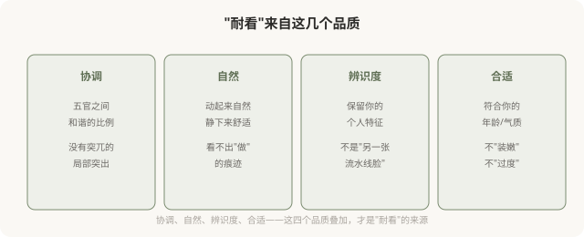

先说结论：高级型医美的终极标志是“耐看”——经得起时间检验、经得起潮流变化、经得起反复打量。“惊艳”是庸俗型追逐的目标（一眼吸睛、立刻变化），但惊艳往往短暂，随潮流退去而失色；“耐看”是高级型的追求（协调、自然、有持久美感），它不刺激，但经久。这一篇讲高级型为什么追求耐看、耐看来自什么、以及如何把“耐看”作为自己医美的评价标准。
惊艳 vs 耐看

惊艳和耐看不是完全对立——有些结果既惊艳又耐看。但庸俗型往往只追求惊艳（一眼吸睛、明显变化），忽视耐看；高级型则把耐看放在第一位，惊艳是次要的。
为什么“惊艳”往往短暂
惊艳的美感通常依赖强烈的视觉刺激——突出的轮廓、饱满的体积、明显的对称。这些刺激在第一眼会抓人，但有几个问题：
- 习惯化：看久了，刺激感减弱，“惊艳”变成“普通”。
- 潮流变化：今天惊艳的标准，明天可能过时。
- 比例失衡：为追求惊艳而做的局部极致，往往破坏整体协调，时间久了显得突兀。
- 可识别：惊艳的医美结果常被“一眼看出做过”，而一旦潮流转向，“做过”的痕迹就成了尴尬。
所以追求惊艳的庸俗型，常常陷入“必须不断加码维持惊艳”的循环——剂量越打越多，变化越来越显，最终走向假面。
耐看来自什么

耐看与潮流的关系
庸俗型医美的一个根本问题：它追求当下的“标准”，而标准会变。五年前的“标准脸”（高鼻、尖下巴、饱满苹果肌），现在被认为是“网红脸”“显俗”；今天流行的“幼态脸”“妈生款”，五年后可能也被新的标准取代。
耐看的医美，是超越潮流的——它不追逐“当下标准”，而是追求“协调、自然、属于你”。这种美不会因为潮流改变而显得过时，因为它不依赖潮流。
如何用“耐看”作为评价标准
做完医美后，怎么判断结果是不是“耐看”？几个自测：
- 远观：3 米外看，整体协调吗？
- 近看：0.5 米内看，有不自然痕迹吗？
- 动态：笑、说话、做表情，协调吗？
- 照片：拍正脸侧脸，自然吗？
- 时间：半年后回看，仍觉得好吗？
- 他人：别人感觉“你变好看了”，但说不出哪里变？
如果这些答案大多积极，恭喜你，结果偏向高级型。如果“一眼看出做过”“显假”“半年后觉得俗”，那可能落入了庸俗型。
一个反思
“耐看”之所以是高级型的终极标志，是因为它最难造假、最难速成。惊艳可以通过过度治疗快速达到，但耐看需要克制、整体、个性化的智慧——这是花钱买不到的，只能在思路和选择上逐步修炼。追求耐看，本质上是把医美从“消费”变成“长期投资”——投资一个经得起时间检验的、属于你自己的样子。这比任何一次“惊艳”的瞬间，都更值得。
本文用于健康教育与审美思辨，明确倡导高级型的“耐看”追求；具体医美决策须结合个体情况与具备资质的医师面诊。